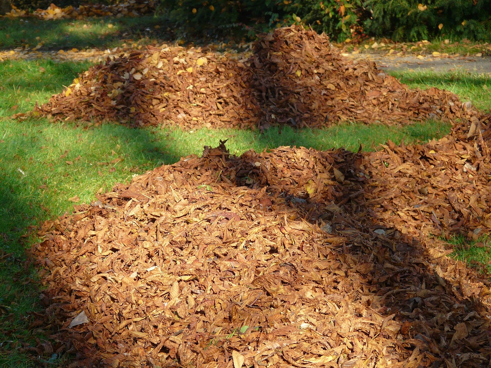

×
Vermicomposting: A Quick Start Guide
Vermicomposting is a method of composting where worms (typically red wigglers) break down organic waste into nutrient-rich compost. It’s an efficient and eco-friendly way to recycle food scraps and create rich soil for plants.
- Set Up Your Worm Bin
Use a container with a lid. Drill small holes for airflow, and line the bottom with moist bedding (shredded paper, coconut coir, or cardboard).
- choose the Right Worms
Red wigglers (Eisenia fetida) are ideal for vermicomposting. You can buy them online or from local suppliers.
- Add Your Worms
Place the worms into the prepared bedding. They will burrow in and begin adjusting to their new home.

- Feed Your Worms
Add food scraps like fruit and veggie peels, coffee grounds, and eggshells. Avoid adding meat, dairy, or oily foods, as they can attract pests or create odors.
- Maintain Moisture and Temperature
Keep the bedding moist like a damp sponge. Maintain a temperature of 55-77°F (13-25°C). Place the bin in a cool, shady spot.
- Harvest the Compost
After 3-6 months, you’ll notice dark, crumbly compost. Push the contents to one side, add fresh bedding to the empty side, and let the worms migrate. Once they've moved, you can collect the compost and use it for your plants!
Vermicomposting is simple, sustainable, and great for the environment!
review me :)

×
references:
here are all the references to the information and the pictures that I used, just copy the link and paste it in your browser.
composting with a bin
Cornell Waste Management Institute. (2020). Composting basics: What is composting?. Cornell University. https://compost.css.cornell.edu/Composting_basics.pdf
U.S. Environmental Protection Agency. (2023). Composting at home. EPA. https://www.epa.gov/recycle/composting-home
Composting Council Research & Education Foundation. (2021). Home composting guide. https://www.compostingcouncil.org/page/HomeCompostingGuide
Planet Natural. (2023). How to compost: A guide to composting at home. Planet Natural. https://www.planetnatural.com/composting-101/
vermicomposting
Edwards, C. A., & Arancon, N. Q. (2004). Vermicomposting: A commercial venture or an important environmental solution? In Vermiculture technology: Earthworms, organic wastes, and environmental management (pp. 1-20). CRC Press.
Joshi, R., & Vig, A. P. (2010). Vermicompost as an effective organic fertilizer and biocontrol agent: Effect on growth, yield, and quality of plants. Bioresource Technology, 101(15), 6790-6794. https://doi.org/10.1016/j.biortech.2010.03.146
Lim, S. L., Lee, L. H., & Wu, T. Y. (2016). Sustainability of using composting and vermicomposting technologies for organic waste biodegradation: A review. Chemical Engineering Journal, 282, 606-620. https://doi.org/10.1016/j.cej.2015.06.034
Nair, J., Sekiozoic, V., & Anda, M. (2006). Effect of pre-composting on vermicomposting of kitchen waste. Bioresource Technology, 97(16), 2091-2095. https://doi.org/10.1016/j.biortech.2005.09.020
compostig pile
Cornell Waste Management Institute. (n.d.). Composting resources. Cornell University. Retrieved from http://cwmi.css.cornell.edu/
U.S. Environmental Protection Agency. (2023). Composting at home. EPA. Retrieved from https://www.epa.gov/recycle/composting-home
Composting Council Research & Education Foundation. (2021). Home composting guide. Retrieved from https://www.compostingcouncil.org/page/HomeCompostingGuide
Planet Natural. (2023). How to compost: A guide to composting at home. Retrieved from https://www.planetnatural.com/composting-101
images
composting with a bin image:Sign in - Google Accounts. (2024). Pixabay.com. https://pixabay.com/photos/compost-garden-waste-bio-nature-419261/
hand with worms and dirt: discounthero.org. (2024). Tinyurl.com. https://tinyurl.com/bdfewjp3
composting pile:Hans. (2011, December 7). Leaves Pile Of Park - Free photo on Pixabay. Pixabay.com. https://pixabay.com/photos/leaves-pile-of-leaves-park-fall-10742/
composting tools: Carola68. (2020, May 18). Rake Tool Garden - Free photo on Pixabay. Pixabay.com. https://pixabay.com/photos/rake-tool-garden-tool-old-rusted-5180044/
books on a shelf image: kdavis25. (2014, April 10). Books Education Reading - Free photo on Pixabay. Pixabay.com. https://pixabay.com/photos/books-education-reading-knowledge-320647/
cardboard pile: Recycling is Thriving, in Part Due to the Pandemic. (2021, August 30). Northeast Resource Recovery Association. https://www.nrrarecycles.org/news/recycling-thriving-part-due-pandemic
pink crochet worm: (2024). Pinimg.com. https://i.pinimg.com/originals/95/05/24/950524fa12d2944b0c8bd49271415d74.jpg
composting pile image: (2019). Uaf.edu. https://itgrowsinalaska.community.uaf.edu/wp-content/uploads/sites/859/2020/07/Compost-pile-vermont-1.jpeg
image of tools: (2014). Davidtyler.com. https://davidtyler.com/wp-content/uploads/2016/05/tools_cropped.jpg
image of gardening tools: (2024). Propertygeek.in. https://www.propertygeek.in/wp-content/uploads/2022/03/25-Crucial-Tools-Used-for-Gardening-A-Complete-List.jpg
review me :)